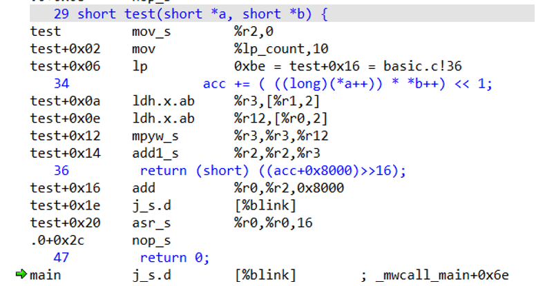

Compiler Optimizations¶
Part 1. Prerequisites¶
Before starting to use the ARC DSP, the following prerequisites are required:
Make sure that the MetaWare tools for Windows is installed
Learn how to create, edit, build, and debug projects in MetaWare IDE
Make sure that the IoT Development Kit and Digilent USB drivers (Digilent Adept 2) installed and tested
IoT Development Kit board is EM9D based
The following needs to be tested before starting this lab:
- Connecting IoT Development Kit to computer
- Connecting serial console (PuTTY) to IoT Development Kit COM port (For information on how to do initial board setup and configuration, see Getting Started chapter of ARC IOT Design Kit User Guide).
Part 2. Lab Objectives¶
Use MetaWare compiler options to optimize regular C code employing DSP extensions. Try direct usage of DSP extensions through intrinsic.
Part 3. Lab principle and method¶
This section describes compiler options in MetaWare used in this lab.
To optimize code to use DSP extensions two sets of compiler options are used throughout the lab, DSP Extensions options and optimization level.
DSP Extensions Options¶
Use embARC OSP build system to build tool. The details can be found in embARC OSP document page. Here is the example command. You can pass extra compiler/liner options by ADT_COPT/ADT_LOPT.
gmake BOARD=emsk BD_VER=23 CUR_CORE=arcem9d TOOLCHAIN=mw gui ADT_COPT="-Hfxapi -Xdsp2" OLEVEL=O2
Options that are used in the lab are:
-Xdsp[1/2]:Enable DSP instructions
-Xdsp_complex, -Xdsp_divsqrt:Enable complex arithmetic DSP, divide, and sqrt instructions
-Xdsp_ctrl[=up|convergent,noguard|guard, preshift|postshift]:Fine-tune the compiler’s assumptions about the rounding, guard-bit, and fractional product shift behavior
-Hdsplib: Link in the DSP libraryFor programming ARC fixed-point DSP in C and C++
Contains functions to carry out DSP algorithms such as filtering and transforms
-Hfxapi: Use the Fixed Point API support libraryUsed with
-Xdsp. Provides low level intrinsic support for ARC EM DSP instructions.Programs written using this API execute natively on an ARC EM processor with DSP extensions and can also be emulated on x86 Windows hosts.
-Xxy: Specifies that XY memory is availableUsed with
-Xdsp2. Enables optimization for XY memory-Xagu_small, -Xagu_medium, -Xagu_large:Enables AGU, and specifies its size. Note, IOTDK has small AGU
Note
Because ARC is configurable processor, different cores can contain different extensions on hardware level. Therefore, options set for compiler should match underlying hardware. On the other hand, if specific hardware feature is present in the core but compiler option is not set, it cannot be used effectively, if used at all. IOTDK Core default options are presented in Appendix A.
Optimization level¶
MetaWare compiler has different optimization levels, which enables or disables various optimization techniques included in the compiler. You can pass the optimization option to gmake by “OLEVEL=O2”.
The lowest level is the default -O0, which does little optimization to the compiled assembly code, which can be used for debugging, because in un-optimized assembly code all source code commands have 1:1 representation. On the other hand, -O3 highest level optimization highly modifies output assembly code to make it smaller and fast, but debugging such a code is harder, because it is not close match with source code. Also, high level of optimization requires longer compilation time, which for large project can be significant, if many compilation iterations are to be made.
Optimization for DSP extensions¶
A regular code without direct usage of DSP extensions can be optimized to use DSP extensions wherever applicable, which compiler can do automatically with DSP extension options corresponding to hardware are set and high-level of optimization is selected.
Checking options¶
Options are specified in the makefile or command line, as shown in the previous section.
Part 4. Optimizing code¶
An example code below contains a function “test” which contains a 20 step for loop and a multiply accumulate operation done manually.
#include <stdio.h>
short test(short *a, short *b) {
int i;
long acc = 0;
for(i = 0; i < 10; i++)
acc += ( ((long)(*a++)) * *b++) <<1 ;
return (short) (acc);
}
short a[] = {1,2,3,4,5, 6,7,8,9,10};
short b[] = {11,12,13,14,15, 16,17,18,19,20};
int main(int argc, char *argv[]) {
short c = test(a,b);
printf("result=%d",c);
return 0;
}
Step 1. Compiling without DSP extensions¶
Set optimization level “-O0”, and no DSP extensions (unchecking -Xdsp1, -Xdsp2).
After compilation, open disassembly window and check assembly code for function “test”.
Below is the list of options used when launching gmake:
OLEVEL=O0 ADT_COPT="-arcv2em -core1 -Xlib -Xtimer0 -Xtimer1"
You can use the following command to generate disassembly code:
elfdump -T -S <your_working_directory>/obj_iotdk_10/mw_arcem9d/dsp_lab1_mw_arcem9d.elf
Notice assembly code in the disassembled output. See how many assembly instruction are used for each lin. For example, for loop spends several instruction to calculate loop variable value and check whether to stop.

Step 2. Compiling without DSP extensions, with -O2¶
Compile with:
OLEVEL=O2 ADT_COPT="-arcv2em -core1 -Xlib -Xtimer0 -Xtimer1"
Adding optimization level -O2, optimizes out many of the instructions:

In this code it is easy to find zero-delay loop (“lp” command) which acts as for loop. Note that multiply-accumulate is done with separate “mpyw_s” and “add1_s” instructions.
Step 3. Compiling with DSP extensions¶
Compile with:
OLEVEL=O3 ADT_COPT="-arcv2em -core1 -Xlib -Xtimer0 -Xtimer1 -Xdsp1"
Adding -Xdsp1 (optimization level changed to -O3) helps compiler to optimize away “mpyw_s” and “add1_s” instructions and replace them with hardware dual-16bit SIMD multilication “vmpy2h”. Notice the loop count is now 5.

Note
Assignment: Remove “<<1” from test function and see changes in the output instructions.
Appendix A. IOTDK Default Core Configurations¶
ARC_EM5D
This is an ARC EM core with 32 bits address space, 128 KB of code memory (ICCM) and 256 KB of data memory (DCCM).
-arcv2em -core1 -HL -Xcode_density -Xswap -Xnorm -Xmpy16 -Xmpy -Xmpyd -Xshift_assist -Xbarrel_shifter -Xdsp2 -Xdsp_complex -Xtimer0 -Xtimer1
ARC_EM7D
This is an ARC EM core with 32 bits address space, 256 KB of code memory (ICCM) and 128 KB of data memory (DCCM). Corresponding MetaWare compiler options for this configuration are:
-arcv2em -core2 -HL -Xcode_density -Xdiv_rem=radix2 -Xswap
-Xbitscan -Xmpy_option=mpyd -Xshift_assist -Xbarrel_shifter
-Xdsp2 -Xdsp_complex -Xdsp_divsqrt=radix2 -Xdsp_accshift=limited -Xtimer0 -Xtimer1 -Xstack_check -Hccm -Xdmac
ARC_EM9D
This is an ARC EM core with 32 bits address space, 256 KB of code memory (ICCM) and 128 KB of data memory (DCCM). The corresponding MetaWare compiler options for this configuration are:
-arcv2em -core2 -Hrgf_banked_regs=32 -HL -Xcode_density
-Xdiv_rem=radix2 -Xswap -Xbitscan -Xmpy_option=mpyd
-Xshift_assist -Xbarrel_shifter -Xdsp2 -Xdsp_complex
-Xdsp_divsqrt=radix2 -Xdsp_itu-Xdsp_accshift=full -Xagu_large
-Xxy -Xbitstream -Xfpus_div -Xfpu_mac -Xfpus_mpy_slow
-Xfpus_div_slow -Xtimer0 -Xtimer1 -Xstack_check -Hccm -Xdmac
ARC_EM11D Configuration
This is an ARC EM core with 32 bits address space, 64 KB of code memory (ICCM) and 64 KB of data memory (DCCM). Corresponding MetaWare compiler options for this configuration are:
-arcv2em -core2 -Hrgf_banked_regs=32 -HL -Xcode_density
-Xdiv_rem=radix2 -Xswap -Xbitscan -Xmpy_option=mpyd
-Xshift_assist -Xbarrel_shifter -Xdsp2 -Xdsp_complex -Xdsp_divsqrt=radix2 -Xdsp_itu -Xdsp_accshift=full -Xagu_large -Xxy -Xbitstream -Xfpus_div -Xfpu_mac -Xfpuda -Xfpus_mpy_slow -Xfpus_div_slow -Xtimer0 -Xtimer1 -Xstack_check -Hccm -Xdmac